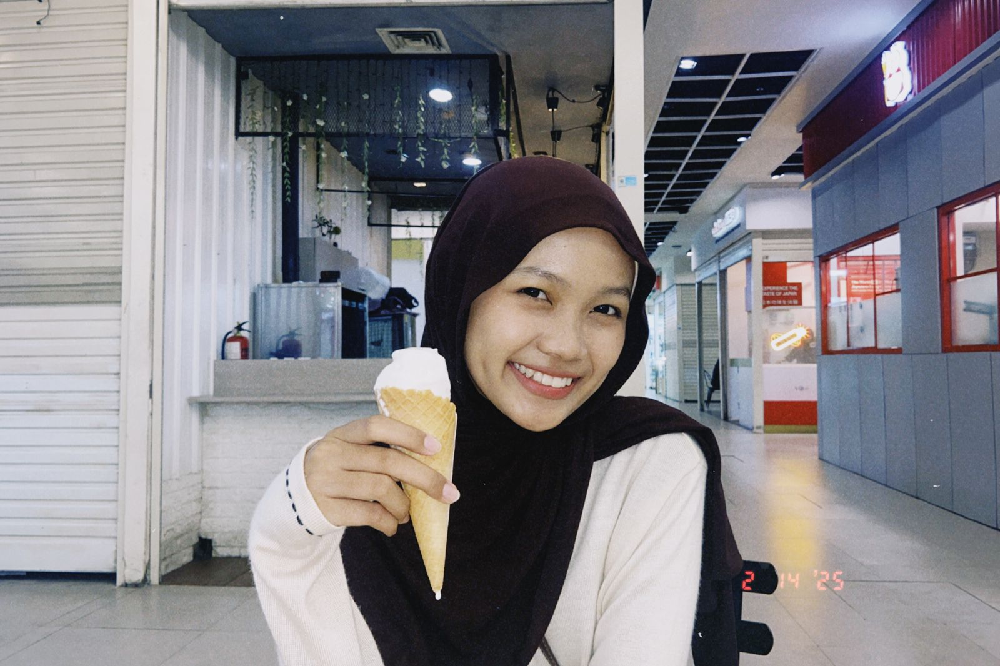

I am Farisha, First-year Information Systems student with a foundation in Java programming and experience in data analysis through database design courses. Has a basic certificate in Data Science and SQL, as well as experience as a tutor for UTBK General Reasoning which develops communication, leadership, and problem-solving skills. Focused on continuously developing technical capabilities. I believe that every challenge is an opportunity to grow, and I love sharing knowledge with others.
| NIM | : 245150400111065 |  |
| Nama | : Farisha Isnaya Huda | |
| Fakultas | : Ilmu Komputer | |
| Program Studi | : Sistem Informasi | |
| Asal | : Blitar | |